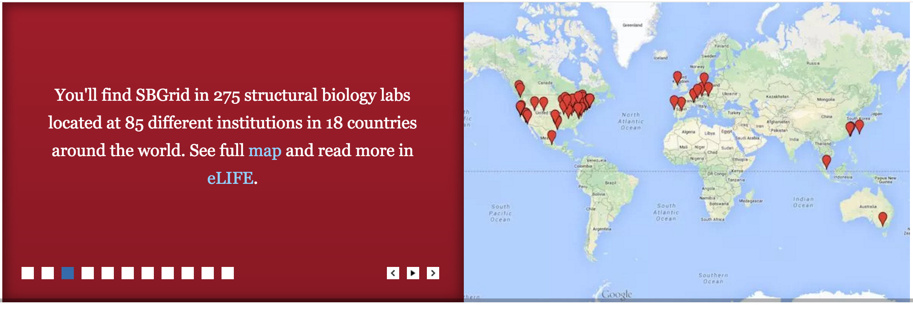

Github repo

SBGrid is a non-profit research computing support organization based at Harvard Medical School in Boston.
SBGrid will be offline for network upgrades 9 APR 2106. Services, including license servers, software updates, and email support, will not be available. We expect to be back online by 10 Apr.
We support structural biologists by providing structural biology laboratories with a tested and refined software infrastructure that includes a large library of scientific applications. Members also benefit from access to SBGrid-supported high performance computing (HPC) resources and training opportunities.
The SBGrid team installs and maintains a collection of 300+ structural biology applications on Linux and OS X computers in your laboratory (including laptops). These are primarily open-source programs, though a few commercial applications are also supported including Geneious for cloning and bioinformatics, incentive builds for PyMOL, and for North American labs, the Schrodinger Small-Molecule Drug Discovery Suite. Members access a complete execution environment that includes the suite of structural biology applications preconfigured to run without any additional settings. Applications can be invoked from the shell prompt; there is no need to set up additional variables, change your path environment, or install supporting applications.
SBGrid will monitor all software websites for updates and install major software upgrades on a monthly basis. We also recompile existing software for newer releases of supported operating systems and respond to your bug reports and new software requests. Members find savings in time, money, and the frustration associated with managing software licensing, updates, conflicts, and bug fixes.
SBGrid hosts monthly live webinars that feature tutorials by contributing developers and offer members the opportunity to ask the developer questions directly. This collection of tutorials is also published on the SBGridTV YouTube channel and made publicly available. More intensive training opportunities are provided to members through occasional hands-on workshops and local computing schools.
You can find out more about ongoing and completed activities and projects related to SBGrid by reading our publications.
Andrew Morin, Ben Eisenbraun, Jason Key, Paul C Sanschagrin, Michael A Timony, Michelle Ottaviano, Piotr Sliz. Cutting edge: Collaboration gets the most out of software. link
Our technical team can offer guidance for setting up an adequate computing infrastructure in your own laboratory.
We also facilitate access to the Open Science Grid Cyberinfrastructure through the SBGrid OSG Virtual Organization and the US XSEDE Cyberinfrastructure through the SBGrid Campus Champion program. The XSEDE program is especially useful for EM computations. See sbgrid.org Resources page for more information.
Members also benefit from access to a number of other specialized computing resources, including: the Wide-Search Molecular Replacement (WSMR) computing portal, a service for determining crystallographic phase using the Phaser program. the Deformable Elastic Network (DEN) portal, a service for refining low-resolution electron density data, and a dedicated server to host the SHARP application, a subset of chemical compounds that are used for screening at the ICCB-Longwood Screening Facility.
For labs in North America, a dedicated SBGrid cluster at Harvard Medical School to run docking jobs using a limited version of the Schrodinger Suite for molecular modeling and small molecule docking.
Our team reports member feedback to developers to help identify bugs and promote features and works closely with many developers to beta test new software versions. We recompile and install popular applications on new operating systems when developers can no longer provide support and provide guidance on software licensing to streamline the licensing process for our members. Our monthly webinars and occasional workshops also support developer training initiatives.
Developers, please see our Deploy Your Software page for more information on our developer program.
The SBGrid Consortium is a non-profit, NIH-compliant Service Center that operates out of Harvard Medical School. We view the Consortium as a user-supported and user-directed community resource and rely on annual membership fees to support our community operation. Please visit our Join Us page to request a membership packet and a detailed quote.
Please don't forget to cite the software tools that you rely on for your research - including SBGrid (see our eLife paper). We are actively applying for grant support to improve SBGrid and your acknowledgement directly helps this effort.